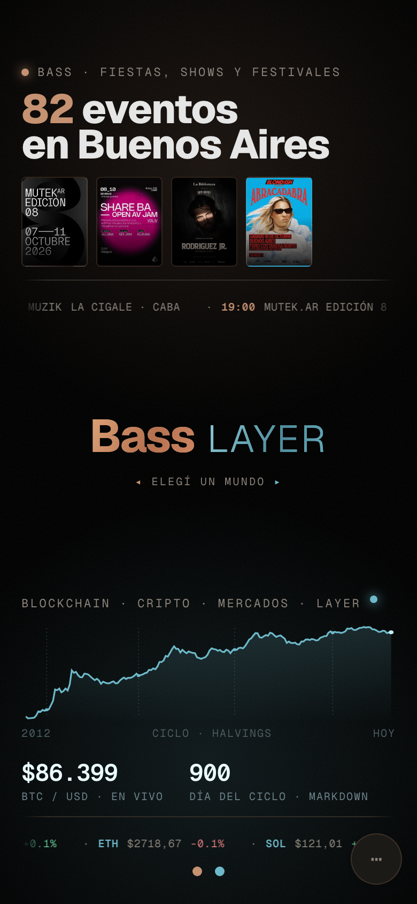
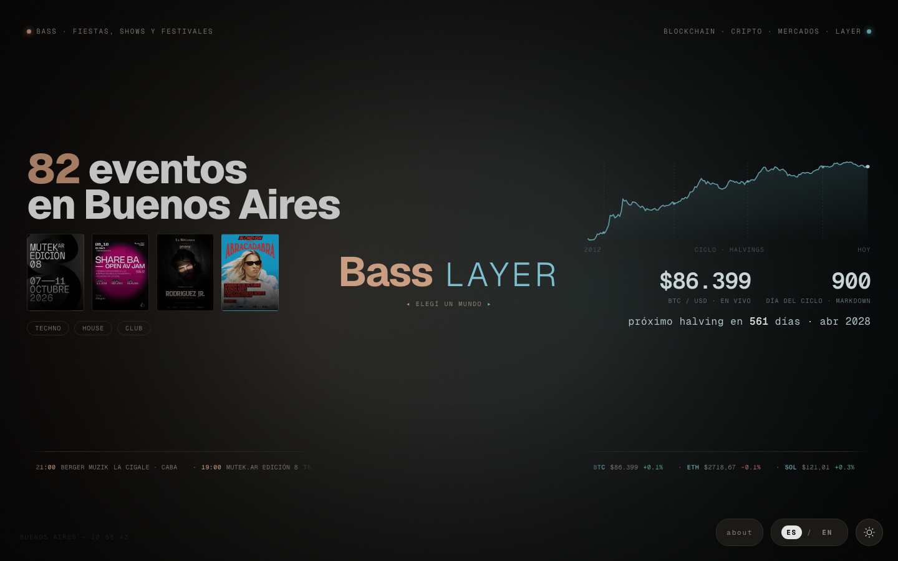
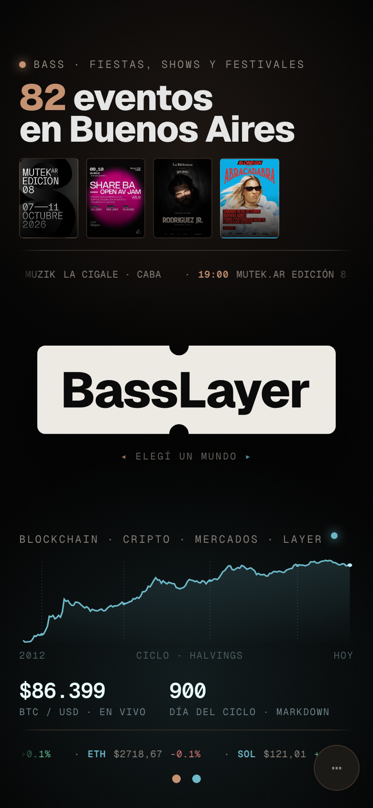
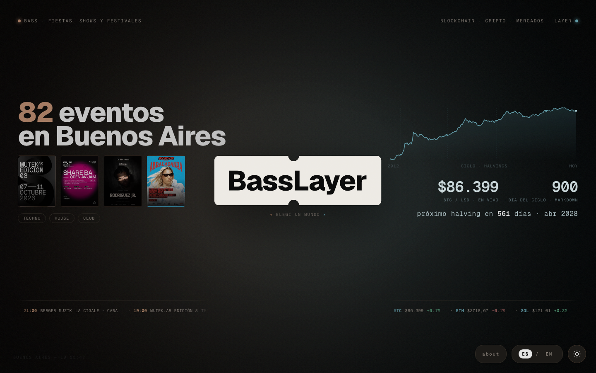
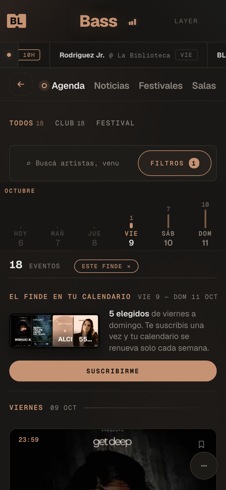
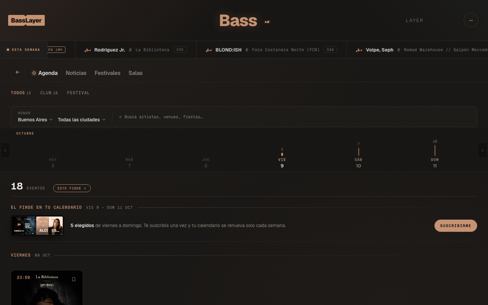
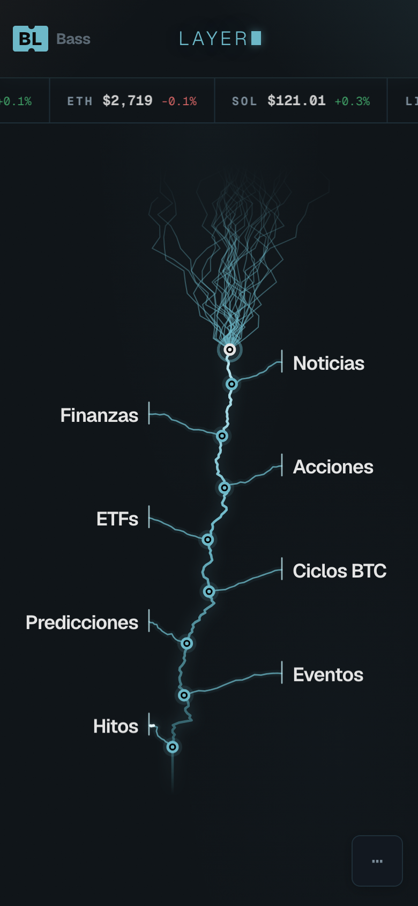
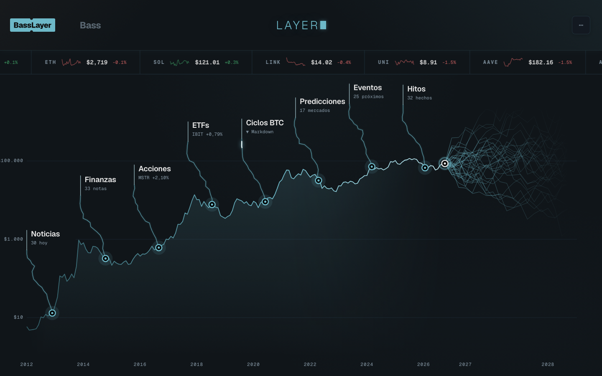
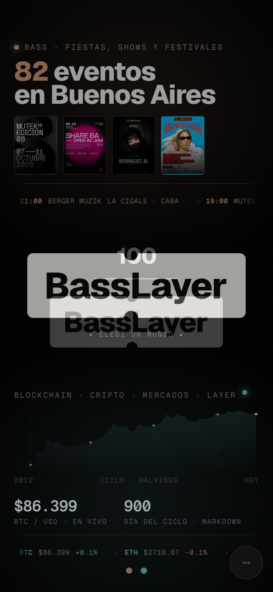
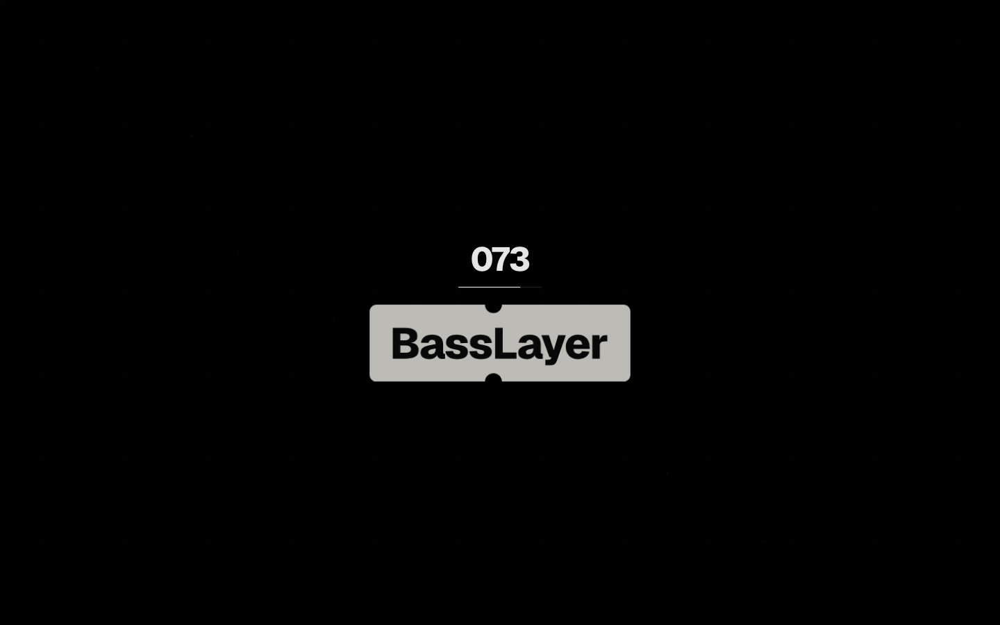

El home tiene el nombre escrito ("Bass LAYER") y adentro de cada mundo no aparece la marca.

Home · mobile
Home · desktopEl boleto reemplaza al nombre del centro. Al pasar el mouse por la mitad de Bass se vuelve cobre, por la de Layer celeste; tocás una mitad y entrás a ese mundo. Adentro del sitio, nada cambia.

Home · mobile
Home · desktopIgual que la 1 y además, adentro de cada mundo, un boleto chico arriba a la izquierda: cobre en Bass, celeste en Layer (en mobile, "BL"). Te dice dónde estás y tocándolo volvés al home.

Bass · mobile
Bass · desktop
Layer · mobile
Layer · desktopAl abrir el sitio, el boleto aparece en la carga (dura menos de un segundo y medio).

Carga · mobile
Carga · desktop